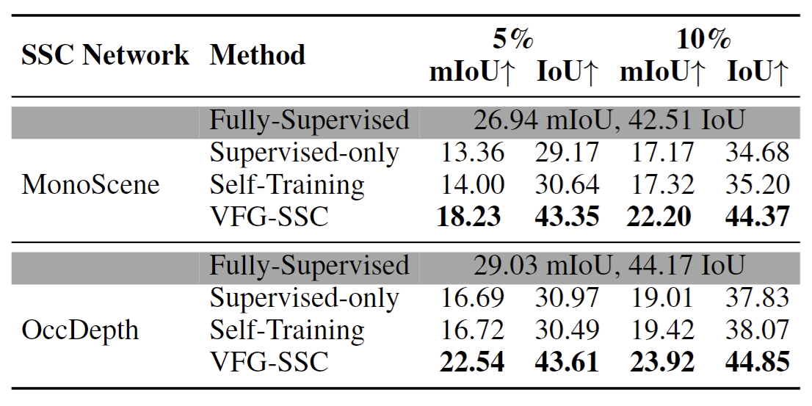

Accurate prediction of 3D semantic occupancy from 2D visual images is vital in enabling autonomous agents to comprehend their surroundings for planning and navigation. State-of-the-art methods typically employ fully supervised approaches, necessitating a huge labeled dataset acquired through expensive LiDAR sensors and meticulous voxel-wise labeling by human annotators. The resource-intensive nature of this annotating process significantly hampers the application and scalability of these methods. We introduce a novel semi-supervised framework to alleviate the dependency on densely annotated data. Our approach leverages 2D foundation models to generate essential 3D scene geometric and semantic cues, facilitating a more efficient training process. Our framework exhibits notable properties: (1) Generalizability, applicable to various 3D semantic scene completion approaches, including 2D-3D lifting and 3D-2D transformer methods. (2) Effectiveness, as demonstrated through experiments on SemanticKITTI and NYUv2, wherein our method achieves up to 85% of the fully-supervised performance using only 10% labeled data. This approach not only reduces the cost and labor associated with data annotation but also demonstrates the potential for broader adoption in camera-based systems for 3D semantic occupancy prediction.
Given a sequence $\mathbf{Q}_t = \{I_{t-k}, I_{t-k+1}\ldots, I_{t-1}, I_t \}$ of $k$ consecutive frames, the SSC model $f_\theta$ generates a semantic occupancy grid which is defined in the coordinate system of the ego vehicle at the timestamp $t$. Each voxel of the grid is categorized as either empty or occupied by a specific semantic class. The grid can be obtained as follows: $\mathbf{\hat{Y}}_t = f_\theta(\mathbf{Q_t})$ where $\mathbf{\hat{Y}}_t \in \mathbb{R}^{H \times W \times Z \times (C+1)}$. $H$, $W$, and $Z$ denote the voxel grid's height, width, and depth, and $C$ is the number of the semantic classes. In a semi-supervised setting (\Approach), the dataset contains two non-overlapping subsets:
A common strategy for tackling the semi-supervised problem is Self-Training. This involves first training a supervised model $f_\theta$ on labeled data $\mathcal{D}^L$ and then generating pseudo-labels for the unlabeled dataset $\mathcal{D}^U$. After that, the model $f_\theta$ is retrained using both the labeled and pseudo-labeled data. Based on this Self-Training approach, our key contribution is to enhance the quality of the pseudo-label by incorporating 3D priors extracted from 2D vision foundation models. We now outline our three-step process in detail.
Quantitative comparison of VFG-SSC with SOTA metric depth estimators on several zero-shot benchmarks. Our VFG-SSC significantly outperforms baseline methods. Remarkably, our approach achieves comparable results to fully supervised counterparts, with just a 15% performance gap using 10% labeled data.
For NYUv2, we consistently outperform other methods with both 5\% and 10\% of training data, underscoring the superiority of our approach over strong baselines. These results indicate that our VFG-SSC is generalizable to different architectures, can be applied to various labeled settings, and applies to both outdoor and indoor scenarios.
Moreover, on the SemanticKITTI hidden test set, our method compares favorably with some fully supervised methods like MonoScene, despite utilizing only 10% labeled occupancy annotation. This emphasizes the effectiveness of our 3D clues and enhancement module, which is effective in generating high-quality pseudo-labels for training any SSC backbones.
@misc{pham2025semisupervised3dsemanticscene,
title={Semi-supervised 3D Semantic Scene Completion with 2D Vision Foundation Model Guidance},
author={Duc-Hai Pham and Duc-Dung Nguyen and Anh Pham and Tuan Ho and Phong Nguyen and Khoi Nguyen and Rang Nguyen},
year={2025},
eprint={2408.11559},
archivePrefix={arXiv},
primaryClass={cs.CV},
url={https://arxiv.org/abs/2408.11559},
}